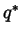
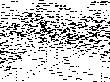
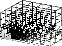
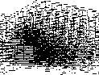
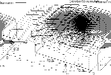

In this section, we give a brief overview of some applications already implemented with deal.II, to show the range of applicability and to give an idea of what our motives were to write such a library.
The solution of the nonlinear Burgers equation

with given initial and boundary conditions in space and time often yields
discontinuous solutions, usually even if the data are smooth. Resolving
these discontinuities without recourse to a globally refined grid is a major
challenge, especially in view of the fact that the same problems with
discontinuous solutions occur with other and more important equations as well,
such as the Euler equations of inviscid, eventually transonic flow.
The examples in Figure  of computations with locally
refined grids for these equations were done by R. Hartmann. The left and
middle picture show solutions of the nonlinear Burgers equation with two
merging shocks on a coarse grid and a refined one; bilinear discontinuous
elements were used for these computations. On the right, the Euler equations
for the shock tube problem were solved; shock, contact discontinuity and
rarefaction wave can clearly be seen.
of computations with locally
refined grids for these equations were done by R. Hartmann. The left and
middle picture show solutions of the nonlinear Burgers equation with two
merging shocks on a coarse grid and a refined one; bilinear discontinuous
elements were used for these computations. On the right, the Euler equations
for the shock tube problem were solved; shock, contact discontinuity and
rarefaction wave can clearly be seen.
In many applications in engineering, one wants to determine the value of a
parameter from measurements. One example would be the estimation of the
elasticity parameters within a body from measurements of the displacement
under a specified load. Another similar problem would be the estimation of the
conductivity in a porous medium from measurements of the hydraulic
head. A prototypic elliptic equation would be

with some boundary conditions. The coefficient q(x) is to be determined
by minimizing the difference between the solution of this equation for a given
coefficient, uq(x), and a measurement umeas, by variation of q.
Problems of this kind usually are ill-posed, i.e. they do not possess a continuous dependence of the optimal parameter  from the measurement umeas, which makes them rather difficult to solve. Furthermore, they are strongly nonlinear and usually require many solutions of the forward problem (i.e. the elliptic equation for a fixed coefficient) to determine the coefficient itself, which makes the efficient solution of the forward problem indispensable.
|

|
![\includegraphics[width=0.34\textwidth]
{pictures/parameter/continuous_exact.eps}](img41.gif)
|
![\includegraphics[width=0.34\textwidth]
{pictures/parameter/continuous_state.eps}](img42.gif)
|
![\includegraphics[width=0.34\textwidth]
{pictures/parameter/discontinuous_est.eps}](img43.gif)
|
![\includegraphics[width=0.34\textwidth]
{pictures/parameter/discontinuous_exact.eps}](img44.gif)
|
![\includegraphics[width=0.34\textwidth]
{pictures/parameter/discontinuous_state.eps}](img45.gif)
|
In Figure  we show two examples of estimated parameters
along with the exact values. In order to reduce the degree of ill-posedness
and to reduce the number of unknowns, the discretization of the parameter qwas performed on a coarser grid than the state variable u. In fact, the
discretization was done on the same grid but we posed additional constraints
such that each patch of four cells can be written as a shape function on the
next coarser grid; these constraints can then be inserted into the system
matrix just as was done for hanging nodes. The discretization of the parameter
was done with discontinuous elements of one degree lower than the polynomial
degree with which the state variable was discretized.
we show two examples of estimated parameters
along with the exact values. In order to reduce the degree of ill-posedness
and to reduce the number of unknowns, the discretization of the parameter qwas performed on a coarser grid than the state variable u. In fact, the
discretization was done on the same grid but we posed additional constraints
such that each patch of four cells can be written as a shape function on the
next coarser grid; these constraints can then be inserted into the system
matrix just as was done for hanging nodes. The discretization of the parameter
was done with discontinuous elements of one degree lower than the polynomial
degree with which the state variable was discretized.
The top row of the picture shows the approximation of a continuous coefficient on a square domain; the state variable was discretized with bilinear elements, while the parameter was discretized with discontinuous constant elements. In the bottom row, a discontinuous coefficient was to be estimated on a circular domain of which one quarter is shown; state and parameter variables used bi-quadratic continuous elements and discontinuous bilinear elements, respectively. No adaptive grid refinement was performed for the second case.
The acoustic wave equation
associated with suitable initial and boundary conditions occurs in a variety of
places in physics, among which are water waves, acoustic sound waves in gaseous media,
electro-magnetics and many other fields. Usually, u is the deviation from
the state of rest and
and a denote density and stiffness
coefficient. The solutions of this equation often share the feature that they
form waves traveling through the domain. Often the region where waves
presently are is significantly smaller than the whole domain, so adaptivity
should be able to reduce the number of cells needed for the solution of this
equation by a noticeable amount, because coarse grids can be used wherever no
waves are presently.
On the other hand, if we are not interested in the whole solution but only in parts of it (say that part traveling in one direction, or an integral over part of the domain at the end time), the domain of influence of the region where we evaluate itself also often is significantly smaller than the whole region, due to the finite speed with which waves spread. Here again a reasonable reduction of the required number of cells can be obtained.
Typical grids showing this are presented in the following. They were
obtained using the program described in [1,3]. In Figure
 , a wave traveling outward from the lower left corner of the
domain is shown. We used a simple error indicator to track the spreading of
the wave to adjust the computational meshes accordingly; it can be seen that
rather coarse cells were used where the solution is smooth.
, a wave traveling outward from the lower left corner of the
domain is shown. We used a simple error indicator to track the spreading of
the wave to adjust the computational meshes accordingly; it can be seen that
rather coarse cells were used where the solution is smooth.
|

|  |
![\includegraphics[width=0.3\textwidth]
{pictures/wave3d/grid.0040.eps}](img50.gif)
|
![\includegraphics[width=0.3\textwidth]
{pictures/wave3d/grid.0060.eps}](img51.gif)
|
In real-life applications such as air flow around a plane or scattering of waves by objects, the computational boundaries often are rather complex. In particular, a coarse grid that already mostly features the contours of the objects usually has many more cells than is acceptable for a coarse grid. One way to avoid this problem is to not approximate the boundary with the grid and pose the boundary values on the boundary of the grid, but to use a mesh that is not necessarily adapted to the physical boundaries and pose boundary values in the weak form of the equation. This allows, among other advantages, to use more regular meshes and a coarse grid with less cells, which enables us to use efficient multigrid algorithms.
Figure  shows examples of solutions to Poisson's
equation using Neumann boundary conditions on an embedded boundary
curve. The interior of the circle is not part of the domain on which
the problem is posed and the solution is set to zero there.
shows examples of solutions to Poisson's
equation using Neumann boundary conditions on an embedded boundary
curve. The interior of the circle is not part of the domain on which
the problem is posed and the solution is set to zero there.
|

|
![\includegraphics[width=0.4\textwidth]
{pictures/conservation/burgers1.eps}](img35.gif)
![\includegraphics[width=0.4\textwidth]
{pictures/conservation/euler.eps}](img37.gif)